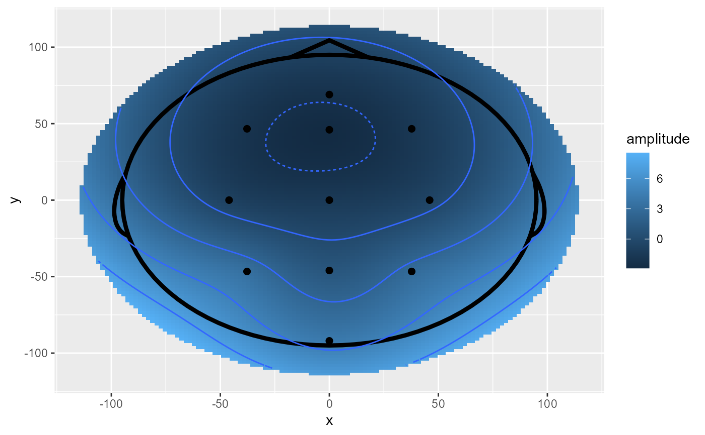

geom_topo() creates a topographical plot as a ggplot2 object.
This function automatically combines a number of distinct geom_* and stat_*
functions to create a default topographical scalp map. Since geom_raster does
not allow unevenly spaced grids, the function creates an interpolated surface.
geom_topo( mapping = NULL, data = NULL, stat = "identity", position = "identity", show.legend = NA, na.rm = TRUE, inherit.aes = TRUE, interpolate = FALSE, interp_limit = "skirt", chan_markers = "point", chan_size = rel(2), head_size = rel(1.5), r = NULL, grid_res = 200, method = "biharmonic", bins = 6, ... )
| mapping | Set of aesthetic mappings created by |
|---|---|
| data | The data to be displayed in this layer. There are three options: If A A |
| stat | The statistical transformation to use on the data for this layer, as a string. |
| position | Position adjustment, either as a string, or the result of a call to a position adjustment function. |
| show.legend | logical. Should this layer be included in the legends?
|
| na.rm | If |
| inherit.aes | If |
| interpolate | If |
| interp_limit | Topoplot with a "skirt" or inside the "head". |
| chan_markers | Defaults to "point". Mark electrode positions with points or text. |
| chan_size | Size for channel markers, if any. |
| head_size | Size of the head shape. |
| r | Head circumference |
| grid_res | Smoothness of the interpolation grid. |
| method | "biharmonic" or ""gam". |
| bins | Number of bins to use for contour lines. |
| ... | Other arguments passed on to |
Other topoplot functions:
stat_scalpcontours(),
stat_scalpmap()
library(ggplot2) ggplot(demo_epochs, aes(x = x, y = y, fill = amplitude, z = amplitude)) + geom_topo()#> Warning: Unknown or uninitialised column: `group`.